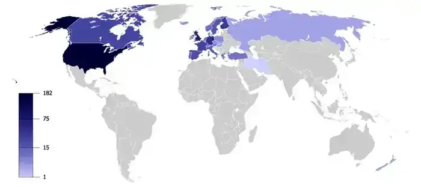

The meeting
The Bilderberg Meeting has been held annually since 1954, bringing together around 120–150 people from politics, finance, industry, academia and media, for three days of off-record discussion. It was founded by a group including Prince Bernhard of the Netherlands, partly to improve transatlantic understanding during the Cold War.
Maps, diagrams and images




The record
The meeting is private — participants speak under the Chatham House rule — but it is not secret: the attendee list is published on the organisation's website each year, the venue is announced, and journalists cover it. Agendas are published in outline.
The claim that it makes binding decisions is unsupported: the meeting has no formal power, no resolutions and no communiqué. Its influence is real and informal, which is a different thing and harder to measure.
Documented: the meetings, the participants and the format.
Documented: the published guest lists.
Not established: any decision-making authority.
Real but unmeasured: informal influence.
The label: documented.
Why it is in the archive
Because it is the case where the 'secret meeting' claim is half right — it is private — and the half that is wrong is checkable in one page of a website.
Open resources on this topic
- PapersOpen-access articles: DOAJ · PubMed Central · Internet Archive Scholar
- BooksPublic-domain and borrowable copies: Open Library · Project Gutenberg · Google Books · Internet Archive
Cite this page
Momin, S. (2026). Bilderberg. The Larger World Archive. https://drsamonline.github.io/LARGE_GLOBE/bilderberg.htmlMomin, Sohil. “Bilderberg.” The Larger World Archive, 2026, https://drsamonline.github.io/LARGE_GLOBE/bilderberg.html.Momin, Sohil. “Bilderberg.” The Larger World Archive, 2026. https://drsamonline.github.io/LARGE_GLOBE/bilderberg.html.@misc{bilderberg2026bilderberg,
author = {Momin, Sohil},
title = {Bilderberg},
year = {2026},
howpublished = {The Larger World Archive},
url = {https://drsamonline.github.io/LARGE_GLOBE/bilderberg.html},
note = {Last reviewed 20 November 2026}
}Last reviewed 20 November 2026 · Corrections policy · this page is not peer reviewed
Sources for this page
- Wikipedia, “Bilderberg Meeting” — the meeting and the criticismen.wikipedia.org
- Wikipedia, “Chatham House Rule” — the convention useden.wikipedia.org
- Wikipedia, “Transatlantic relations” — the original purposeen.wikipedia.org
- Wikipedia, “Elite theory” — the academic frameen.wikipedia.org